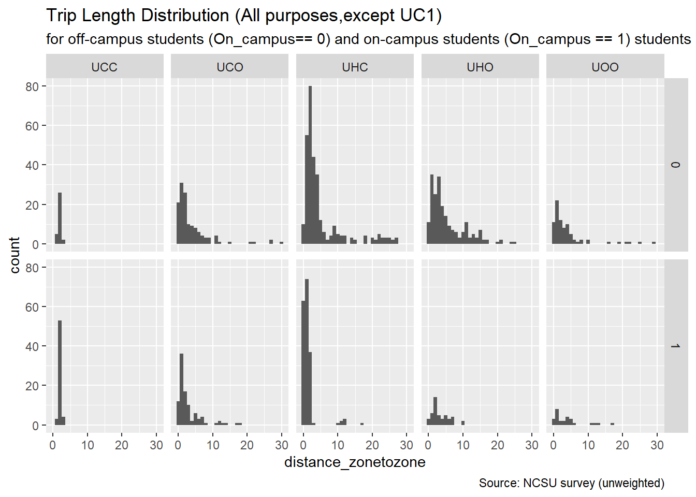
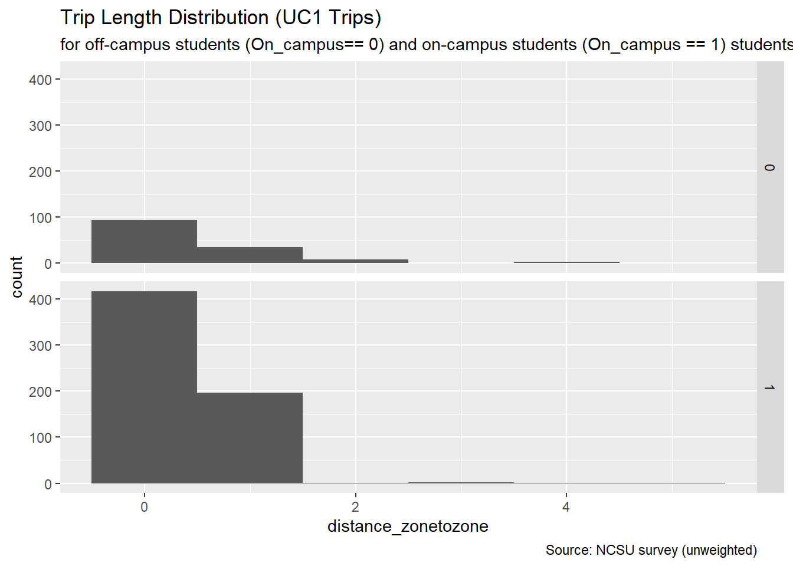

University
Caliper Corporation
November 03, 2021
Introduction
The University Model simulatens the on- and off-campus travel of students of the Triangle Region’s four large universities: North Carolina State University (NCSU), The University of North Carolina at Chapel Hill (UNC), Duke University (Duke) and North Carolina Central University (NCCU). In 2016, the four universities had a combined enrollment of 84481, with 31025 students at NCSU, 29437 at UNC, 15904 at Duke and 8115 at NCCU.
On- and off-campus students are expected to have different travel behavior. On-campus students are expected to make more trips, with many of those trips expected to start and end on campus. On-campus students are more likely to be undergraduate students who are enrolled at the university full-time. Graduate students are more likely to reside off-campus.
The model design (TODO: link to design document) calls for the following trip purposes, each segmented by on-campus and off-campus students:
- Home-Based-Campus (UHC)
- Home-Based-Other (UHO)
- Campus-Based-Other (UCO)
- On-Campus (UC1)
- Inter-Campus (UCC)
- University student Other-Other (UOO)
Trip Generation
The first step in the model development process is to create trip production and attraction models for the above trip purposes. This analysis is presented below and relies on two data sources: a 2014 survey of NC State students conducted by ITRE on behalf of the NC Department of Transportation and a 2012 survey of students attending universities in Virginia. We are therefore assuming that the travel behavior of students attending NC State is sufficiently representative of NC Central, Duke, and UNC students.
Productions
We start with the NC State survey. After removing respondents who did not finish the survey and respondents with a mismatch of more than one between thire stated number of trips and the number of trips for which they provided a description, the total number of complete and valid samples consists of 150 on-campus students and 186 and off-campus students. The breakdown by graduate and undergraduate students is presented in the table below. These respondents reported a combined 1974 trips.
| Home Location | Class Status | Count | Share |
|---|---|---|---|
| On-campus | Undergraduate | 138 | 41.1% |
| Off-campus | Graduate | 120 | 35.7% |
| Off-campus | Undergraduate | 66 | 19.6% |
| On-campus | Graduate | 12 | 3.6% |
The NCSU dataset includes person weights, which were developed by ITRE based on residence locations (on-campus vs. off-campus), credit hours (full-time vs. part-time) and class status (undergraduate vs. graduate). A total of 148 on_campus and 186 off-campus records were assigned a weight. Based on the survey, the NCSU student population made a total of 167898.52 trips in 2016.
The trip production rates developed based on the NCSU survey were verified using trip rates based on surveys of students from four universities in Virginia conducted in 2009 and repeated for two of the universities in 2010, as summarized in Khattak et al. (2012). The first round of surveys obtained a sample size of 2784. The sample size of the second round was 2596.
The NCSU survey data was used to develop trip production rates for on-campus and off-campus students for five of the model’s trip purposes, as follows.
- Home-Based-Campus (UHC): P = Home
- Home-Based-Other (UHO): P = Home
- Campus-Based-Other(UCO): P = Campus
- On-Campus (UC1): P = Campus
- University student Other-Other (UOO): P = Origin
- Campus to Campus (UCC): P = Origin
As noted above, the production end of the trip is either home, campus, or the trip origin, depending on the trip purpose.
Figure 1 shows the average number of trips per student per day for each of the five trip purposes for students residing on-campus and off-campus, based on the raw NCSU survey data. The distribution is skewed to the right, with most students making few trips and a few students making many trips. There appears to be more variability in the number of trips reported by on-campus students, especially for the On-campus and Home-based Campus purposes, which, for on-campus students, both start and end on campus.

To develop production rates, two methods were explored/discussed: cross-classification and regression. Explanatory variables in regression models could include student characteristics such as class status (undergraduate and graduate), on and/or off-campus employment, credit hours (full-time or part-time), and car availability. These variables were expected, and/or shown by other research, to affect university trip production rates. However, using these variables would require that forecast year socio-economic datasets and/or upstream model steps included these variables, which is not currently expected. We therefore used cross-classification techniques, as discussed below.
As part of the cross-classification approach, daily trips per student reported in the NCSU survey were classified based on the following criteria:
1) Place of residence: on-campus or off-campus
2) Trip purpose: UHC, UHO, UCO, UC1 or UOO
3) Travel mode: walk, bike, bus (includes public bus and shuttle), drive, carpool and other
Production rates were developed based on the weighted and unweighted data, as a check on the influnce of the weighting. We found that the rates based on the weighted data are very similar to the rates based on the unweighted data.
The average daily trip rate, using the weighted data, is 5.797. On-campus students make an average of 7.125 trips per day, while off-campus students make an average of 5.158 trips per day. Rates by trip purpose show that on-campus students make more on-campus trips than off-campus students but make fewer off-campus trips.
Consistent with our findings, Khattak et al (2012) found that students in Virginia who reside on-campus make more trips (especially on-campus trips) than those who reside off-campus. On-campus students and that they walk more and drive less than off-campus students. The estimated production trip rates are somewhat lower than the production rates selected for the Triangle Model. During first round of surveys at Old Dominion (ODU), Virginia Tech (VT), University of Virginia and Virginia Commonwealth, daily trip rates ranged from 4.4 to 4.9. For the second round of surveys, the survey instruments were revised to reduce the survey response burden and a larger sample size was obtained. Based on the second round, daily trip rates were 5.3 at ODU and 5.6 at VT.
| Home Location | Trip Purpose | Production Rate | Sample Size |
|---|---|---|---|
| On-campus | On-campus | 4.482 | 150 |
| On-campus | Campus-to-campus | 0.384 | 150 |
| On-campus | Campus-Other | 0.650 | 150 |
| On-campus | Home-Campus | 1.195 | 150 |
| On-campus | Home-Other | 0.256 | 150 |
| Off-campus | On-campus | 0.808 | 186 |
| Off-campus | Campus-to-campus | 0.183 | 186 |
| Off-campus | Campus-Other | 0.795 | 186 |
| Off-campus | Home-Campus | 1.714 | 186 |
| Off-campus | Home-Other | 1.240 | 186 |
The trip production rates by mode will be used to estimate productions for Other-to-other trips. More specifically, the Other-to-other productions will be a function of Home-based Other and Campus-to-Other attractions, as discussed in the model design document. This approach ensures consistency between the “Other” trip ends by mode, i.e., it is not possible to have only automobile Home-based Other and Campus-to-Other movements and only bicycle Other-to-other movements. The table below summarizes the Other-to-other trips by mode. The production rates for the Other-to-other trips, segmented by automobile and non-automobile, are 0.253 and 0.129. The small sample sizes prevent further segmentation by mode.
| Home Location | Mode | Trips | Trip Rate |
|---|---|---|---|
| Off-campus | Car | 62 | 0.333 |
| On-campus | Carpool | 17 | 0.113 |
| Off-campus | Carpool | 8 | 0.043 |
| Off-campus | Walk | 8 | 0.043 |
| On-campus | Car | 4 | 0.027 |
| On-campus | Walk | 4 | 0.027 |
| Off-campus | Bus | 4 | 0.022 |
| On-campus | Bus | 2 | 0.013 |
| Home Location | Purpose | NCSU | UNC | Duke | NCCU |
|---|---|---|---|---|---|
| On-campus | Home-Campus | 14846 | 13611 | 6916 | 3464 |
| On-campus | Home-Other | 3185 | 2920 | 1484 | 743 |
| On-campus | Campus-Other | 20166 | 19134 | 10338 | 5275 |
| On-campus | On-campus | 139046 | 131929 | 71278 | 36369 |
| On-campus | Campus-to-campus | 11929 | 11318 | 6115 | 3120 |
| Off-campus | Home-Campus | 31876 | 30926 | 17335 | 8938 |
| Off-campus | Home-Other | 23073 | 22386 | 12548 | 6470 |
| Off-campus | Campus-Other | 24654 | 23392 | 12638 | 6449 |
| Off-campus | On-campus | 25079 | 23795 | 12856 | 6560 |
| Off-campus | Campus-to-campus | 5666 | 5376 | 2905 | 1482 |
Trip Attraction
As with the trip production rates, trip attraction rates for off-campus attractions (Home-based Other and Campus-based Other) were developed based on the survey of NCSU students. For Home-based Other trips by off-campus students, both trips ends are off-campus. The number of trip attractions is estimated as a function of the land use of the zone. For Campus-to-Other trips and for Home-based Other trips by on-campus students, the production end is the campus. Therefore, in addition to land use variables of the attraction zone, the attraction model for these segments also considers distance between the zone and campus, i.e., attractions very far from the NC State campus will not be visited by students.
For on-campus attractions (Home-based Campus, Campus-to-campus), the attractions are distributed among campus zones proportional to the distribution of the square footage of university buildings.
THe analysis begins with torrelations between the university attractions and land use characteristics at the TAZ level. For trip attractions by on-campus students, the off-campus student population and the number of retail jobs have the highest correlation coefficients. For trips by off-campus students, off-campus student population has the highest correlation coefficient.| TAZ Data Variable | On Campus Attr. | Off Campus Attr. |
|---|---|---|
| StudOff_NCSU | 0.180 | 0.270 |
| StudGQ_NCSU | 0.149 | 0.039 |
| Retail | 0.137 | 0.052 |
| Stud_GQ | 0.131 | 0.060 |
| Total_POP | 0.042 | 0.105 |
| Service_RateHigh | 0.016 | 0.037 |
| employment | 0.004 | 0.010 |
| HH | -0.002 | 0.103 |
| Service_RateLow | -0.006 | -0.017 |
| StudGQ_UNC | -0.026 | 0.019 |
| Office | -0.048 | -0.018 |
| Industry | -0.076 | 0.022 |
Regression Models
The regression models were estimated for each purpose using a dataset that includes all TAZs for which the survey included trip attractions, of any purpose. The TAZs that do nothave any trip attractions in the survey were excluded from the dataset used for model estimation.
The model explains the number of trip attractions at the TAZ level based on the number of the students residing in the TAZ and the number of retail jobs in the TAZ. The coefficients have the expected signs.
On-campus, Campus-Other
| variable | estimate | statistic | p.value |
|---|---|---|---|
| intercept | 20.9149 | 2.80 | 0.0056 |
| Retail | 0.0218 | 1.23 | 0.2203 |
| StudOff_NCSU | 0.1052 | 2.99 | 0.0032 |
| Adjusted R-squared | 0.0391 | NA | NA |
As Campus-other trips by on-campus students, Home-based Other trips by on-campus students are trips between the campus and off-campus location. The model explains the number of trips based on the number of off-campus students residing in the TAZ, the number of retail jobs and the distance to campus. The distance is calculated as the average of the distances between the centroid of the TAZ and each of the centroids of the different NCSU campus TAZs. All coefficients have the expected sign. As expected, trip attractions decrease as the distance increases and trip attractions increase as student population and retail jobs increase.
On-campus, Home-based other
| variable | estimate | statistic | p.value |
|---|---|---|---|
| intercept | 12.2253 | 2.51 | 0.0129 |
| avg_distance_NCSU | -0.7520 | -1.87 | 0.0634 |
| Retail | 0.0254 | 3.33 | 0.0011 |
| StudOff_NCSU | 0.0217 | 1.34 | 0.1829 |
| Adjusted R-squared | 0.0648 | NA | NA |
As UCO and UHO trips by on-campus students, UCO trips by off-campus students are trips between the campus and off-campus location. The model explains UCO trips by off-campus students based on distance to campus, off-campus student population and number of retail jobs.
Off-campus, Campus-based other
| variable | estimate | statistic | p.value |
|---|---|---|---|
| intercept | 90.4750 | 3.443 | 0.0007 |
| avg_distance_NCSU | -4.2141 | -1.938 | 0.0540 |
| Retail | 0.0329 | 0.799 | 0.4253 |
| StudOff_NCSU | 0.2615 | 2.989 | 0.0032 |
| Adjusted R-squared | 0.0656 | NA | NA |
[START HERE]
UHO Trips by Off-campus students
UHO trips by off-campus students have two off-campus trip ends. The model explains UHO trips by off-campus students based on the off- campus student population and the number of retail jobs.| variable | estimate | statistic | p.value |
|---|---|---|---|
| intercept | 100.1907 | 5.378 | 0.0000 |
| Retail | 0.0394 | 0.924 | 0.3567 |
| StudOff_NCSU | 0.2240 | 2.546 | 0.0117 |
| Adjusted R-squared | 0.0249 | NA | NA |
Trip Distribution
Trip length distribution from the NCSU survey

## Warning: Removed 10 rows containing non-finite values (stat_bin).
Mode Choice
Mode split from NCSU survey
Based on the NCSU survey, the majority of the trips by on-campus students are walk trips. The mode split graph below shows that when segmenting by trip purpose, the survey dataset includes less than 20 trips (horizontal black line) for some of mode-purpose combinations. The graph does not show UC1 trips which are mostly walk trips.
Sample overview
 Based on the NCSU survey,the majority of the trips by off-campus students that are not within the campus(UC1) are car trips. The mode split graph below shows that when segmenting by trip purpose, the survey dataset includes less than 20 trips (horizontal black line) for some of mode-purpose combinations. The graph does not show UC1 trips, which are mostly walk trips.
Based on the NCSU survey,the majority of the trips by off-campus students that are not within the campus(UC1) are car trips. The mode split graph below shows that when segmenting by trip purpose, the survey dataset includes less than 20 trips (horizontal black line) for some of mode-purpose combinations. The graph does not show UC1 trips, which are mostly walk trips.

On-campus students mode split
| Trip_Purpose | Pct_Bicycle | Pct_Walk | Pct_Car | Pct_Carpool | Pct_Bus | Pct_Other |
|---|---|---|---|---|---|---|
| UC1 | 4.27 | 91.98 | 1.33 | 0.746 | 1.52 | 0.152 |
| UCC | 3.53 | 3.53 | 11.14 | 3.533 | 78.26 | 0.000 |
| UCO | 0.00 | 32.32 | 39.12 | 15.854 | 12.70 | 0.000 |
| UHC | 3.41 | 62.10 | 9.07 | 6.610 | 18.81 | 0.000 |
| UHO | 5.30 | 7.95 | 47.11 | 36.596 | 3.05 | 0.000 |
Off-campus students mode split
| Trip_Purpose | Pct_Bicycle | Pct_Walk | Pct_Car | Pct_Carpool | Pct_Bus | Pct_Other |
|---|---|---|---|---|---|---|
| UC1 | 2.56 | 83.00 | 7.21 | 0.764 | 6.46 | 0.000 |
| UCC | 0.00 | 0.00 | 26.25 | 2.937 | 69.35 | 1.468 |
| UCO | 2.92 | 24.28 | 52.98 | 3.262 | 16.21 | 0.337 |
| UHC | 1.58 | 13.12 | 50.20 | 4.278 | 29.28 | 1.555 |
| UHO | 1.66 | 6.09 | 83.26 | 6.764 | 2.23 | 0.000 |
Mode split calibration targets
On-campus students mode split calibration targets
| Trip_Purpose | Pct_Bicycle | Pct_Walk | Pct_Car | Pct_Bus | Pct_AllModes |
|---|---|---|---|---|---|
| UC1 | 4.09 | 85.76 | 4.96 | 5.19 | 100 |
| UCC | 3.53 | 3.53 | 14.67 | 78.26 | 100 |
| UCO | 1.50 | 25.43 | 63.10 | 9.97 | 100 |
| UHC | 4.09 | 85.76 | 4.96 | 5.19 | 100 |
| UHO | 1.50 | 25.43 | 63.10 | 9.97 | 100 |
Off-campus students mode split calibration targets
| Trip_Purpose | Pct_Bicycle | Pct_Walk | Pct_Car | Pct_Bus | Pct_AllModes |
|---|---|---|---|---|---|
| UC1 | 2.56 | 83.00 | 7.97 | 6.46 | 100 |
| UCC | 0.00 | 0.00 | 29.62 | 70.38 | 100 |
| UCO | 2.94 | 24.36 | 56.43 | 16.27 | 100 |
| UHC | 1.60 | 13.32 | 55.34 | 29.74 | 100 |
| UHO | 1.66 | 6.09 | 90.02 | 2.23 | 100 |
Mode choice coefficients
Undergraduate
| Coefficient | Value |
|---|---|
| IVTT | -0.02 |
| OVTT | -0.03 |
| Cost | -0.20 |
Graduate
| Coefficient | Value |
|---|---|
| IVTT | -0.04 |
| OVTT | -0.06 |
| Cost | -0.20 |
Caliper Corporation, 2021